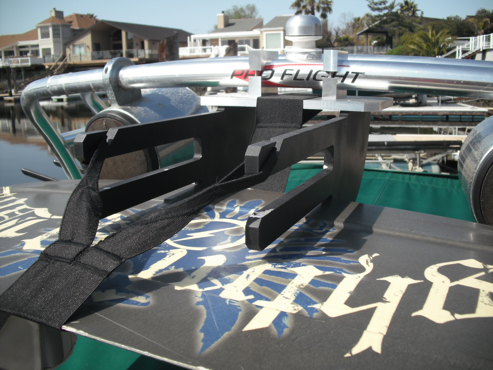
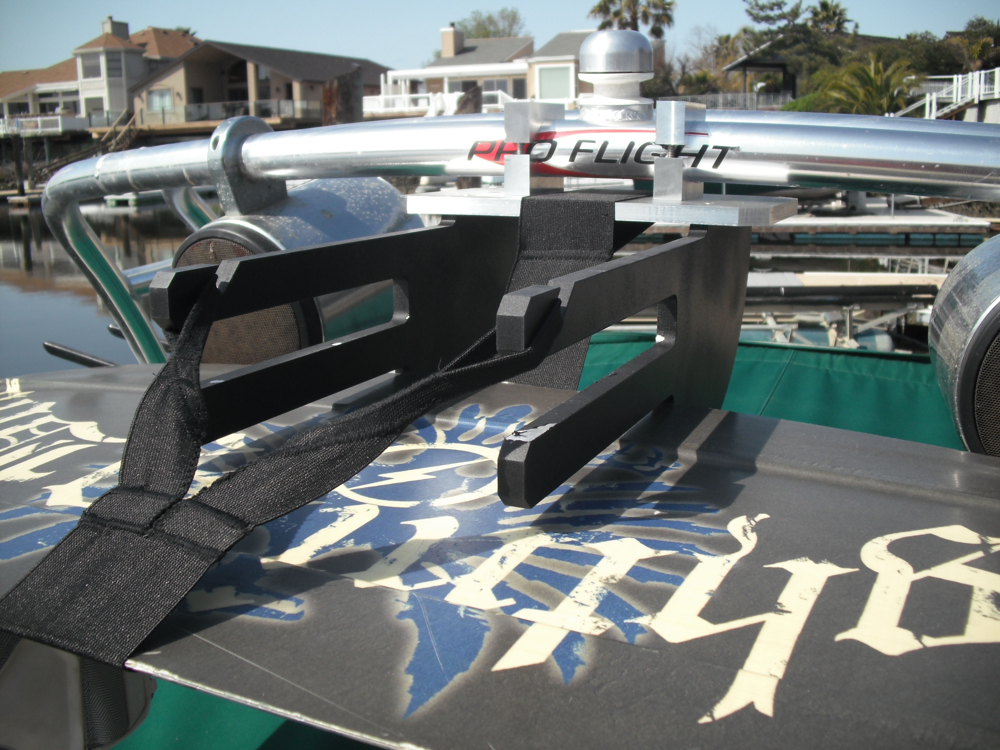
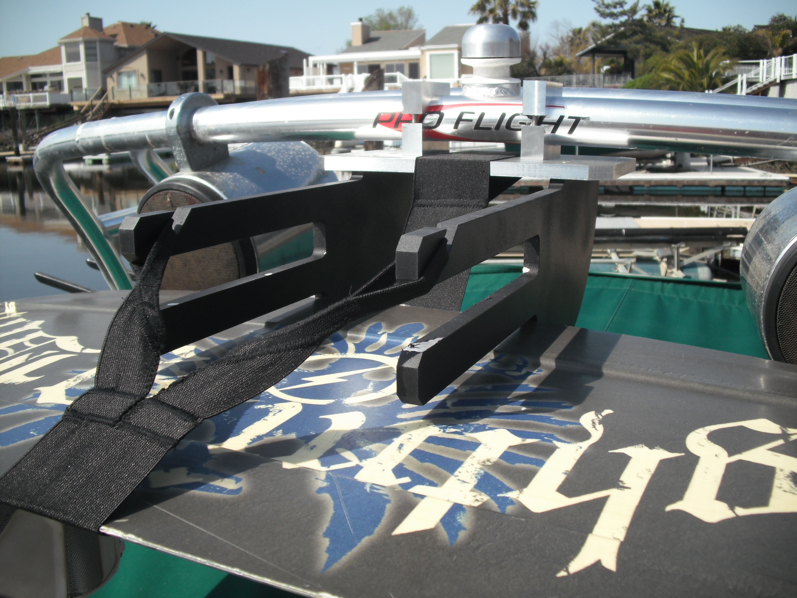

- Final Project for my first machining class. Rubbarized coating protects the boards. -
Wakeboard (Fiberglass)
invisibleinvisible - I swear it's the best board I've ever ridden! I did break the edge...and then patched it,
and then cracked the binding mount, and then patched it. This project has gone through a lot
of iteration. I'm on V4 or so now, and going strong. I want to point out the fin details
on the bottom (those are hard in this material). Also, the many colors represent the
different iterations, and some holes for mounting hardware. -
Easy Eyes Makeup Line - (Easy Line and Easy Blend)
- This was a project for ME310, focusing on rapid prototyping and
user centric design, in order to find solutions to problems that fit diverse users.
We partnered with Belcorp/Esika to "Reinvent makeup for the latin american woman."
The real strength of this design was the concept, which was refined through many
iterations of prototyping, testing, and discussion with women in both the United States
and Colombia. Many of the styles at the time were quite advanced, and difficulty
to apply well. A well blended shadow takes time and practice. Many women don't
even use liquid eye-shadow, because of the difficulty and precision required, and
how frustrating it is if you make a mistake. The applicators make it easy. We
literally had people with no make-up experience putting on liquid eye-liner in
less than a minute. There
Knife forged from railroad spike
- Knife was made from a railroad spike. I forged it into rough shape,
ground it's edge, cut and ground the handle to shape, and fastened the mounting
pins. -
Magnifying Glass
- Shop project Stanford's general shop class. I know it's just a
magnifying glass, but that thing took weeks! It's intentionally designed to use
every machine in the shop. Mill, lathe, tap threads, braze... I even cut and
polished the lens. -
Poker Chips (Mold inserts)
Poker chip - mold inserts
CNC Coaster Mold (Under Construction -
- We were lucky enough to have an old injection molding machine in our
shop. In this project, I CNC'd the coaster mold, selected material and tuned the injection molder temps and
pressures, and lasercut clear inserts to form a smooth surface over the Stanford logo. -
Arc Reactor (Iron Man Costume)
invis - 1 day build : 3D print the arc reactor and add enough LEDs that it
shines through a T-shirt. That's how you make a halloween costume on Halloween!-
 



 invis
invis